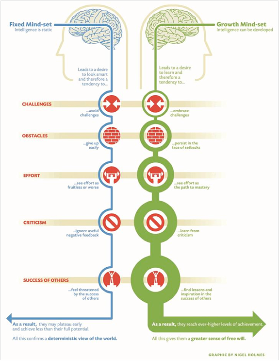

Rejection and Failure
CMHC Business Hours:Monday thru Friday, 8:00am - 5:00pm
Phone: (512) 471-3515 - Student Services Building 5th Floor
"I have missed more than 9,000 shots in my career. I have lost almost 300 games. On 26 occasions I have been entrusted to take the game winning shot, and I missed. I have failed over and over and over again in my life. And that is why I succeed."
You've probably heard some of the famous examples. Albert Einstein was expelled from school due to failing grades. Oprah Winfrey was fired from her job as a reporter and told she was unfit for TV. Dr. Seuss' first book was rejected by 27 different publishers before being released. So if we know that failure and rejection are such common experiences, even among those who go on to be tremendously successful, why can they feel so difficult to endure?
For one, researchers have found that when we feel rejected, our brains are activated in the same regions that process physical pain. Being wired to be sensitive to rejection may seem like a bad thing, but for much of human history a solitary lifestyle would have been dangerous or impossible (think big predators and no grocery stores). Because living in a group was essential for survival, our brains adapted to reflect our need for social alliances. Another explanation for our difficulty in handling failure lies in the cultural messages we receive equating a person's success with their value. Media sources constantly bombard us with messages that tell us, both indirectly and directly, "Buy this product and be successful, loved and valued." It's easy to buy into these ideas, even though everyone experiences failure and rejection throughout life.
Although few would describe these experiences as pleasant, it turns out there are very different ways of responding to failure and rejection that have important implications for how we live our lives. Some people take any failure as a sign of an inherent flaw. They often respond by being self-critical and saying negative things to themselves. For example, when a student receives a low grade on a test she might say to herself, "I'm too stupid to pass this class." This type of thought not only tends to make us feel worse, it also shapes our behavior. That same student may avoid raising her hand in class or stop attending study sessions with friends because she feels her actions won't make a difference anyway, and she doesn't want to reveal to others what she sees as her deficit. Some people respond to social rejections similarly. A student who gets the cold shoulder from a peer after suggesting they hang out might think, "I am such a loser," or "I am never putting myself in this situation again!"
There are other ways to respond, however! Another student with a low grade on a test might initially groan upon seeing her grade, but then think, "I am really going to need to step up the studying before the next test," or "This class is harder than I realized. I'm going to need to track down some more help so I can learn this." The difference is that for this student, the grade is not seen as a reflection of some unchangeable quality in her. The same ideas apply to life outside of the classroom. Rather than taking his peer's disinterest personally, the student who got the cold shoulder might think, "I guess he's not interested in making new friends right now," or "Maybe I'll try a different approach next time I'm getting to know someone since that one didn't seem to work." Note that this mindset is not about shirking responsibility for an unfavorable outcome. In fact, you are actually able to more accurately assess a situation when you are not caught in a spiral of self-criticism.
In Stanford neuropsychologist Carolyn Dweck's book Mindset, she talks in detail about the differences between these two attitudes towards failure. She links the first to the fixed mindset, or the belief that intelligence and personal character are static, and the second attitude to the growth mindset, or the belief that these things can be developed. Dweck argues that individuals with a fixed mindset are anxious about any challenge because if they try and fail, they believe it reveals something significant about their competence or worth, something that cannot be changed. Consequently, people with this mindset interpret having to exert effort as a sign that they really aren't good at something, so they avoid challenges and opt for "safer" tasks.
She and her research team have worked for years to illustrate how, beginning at a very young age, this mindset shapes the way we view obstacles, criticism, effort, and success. For example, after completing easy puzzles, four-year-olds were given a choice of redoing the same puzzle or trying a more difficult one. Children with the fixed mindset opted to redo the same puzzle, while children with the growth mindset were excited to try the new one. You can probably imagine how this scenario might translate for college students, athletes, and professionals, who have the choice to either stick with safe tasks or challenge themselves to grow and learn, knowing sometimes they will fail.
So if you identify with a fixed mindset, is it possible to change? The answer is a resounding yes! By reading this far and learning about the growth mindset, you have already taken the first step. Next, begin to notice the sorts of thoughts that come to mind when you are confronted with challenges. Then, try stepping back from these thoughts and recognizing them as what they are: just thoughts, not facts about you or your capacity. For example, if you notice yourself thinking "I'm not smart enough to pass this class," stop and ask yourself how realistic that thought is. Consider all of the other courses you have passed or times when you have faced other academic challenges. Taking this larger perspective on your situation can help you to not overgeneralize based on one situation. As you practice a growth mindset, you may move away from these types of judgments and towards the idea that your abilities are not fixed. The graphic at the bottom of the page is a good overview of the important distinctions between these frameworks, and you may want to post it somewhere visible as a daily reminder to look for opportunities to shift your thinking.
Even if you feel afraid when you think about the possibility of failing, you still have a choice about how you live your life and whether you want to keep doing the same puzzle over and over. Be patient with yourself; changing your mindset in order to look at failure and rejection differently is a gradual process that takes practice. It can also help to seek support from friends, family, or mental health professionals as you work on changing your thought patterns. Counseling is available to UT-Austin students through the Counseling and Mental Health Center. Call 512-471-3515 to make an appointment, or click here to learn more information about CMHC services. Rejections will continue to sting and failures will continue to be frustrating, but if you see them as opportunities instead of limitations, they won't dictate who you are or who you become.
Dweck, C. S. (2006). Mindset: The new psychology of success. New York, NY US: Random House.

UT's Counseling & Mental Health Center (CMHC)
- Michael Jordan (cut from his high school basketball team)
Where can I find help?
Call 512-471-3515 for information on setting up an appointment with a counselor.
CMHC also offers the CMHC Crisis Line: 512-471-CALL for a telephone counselor.